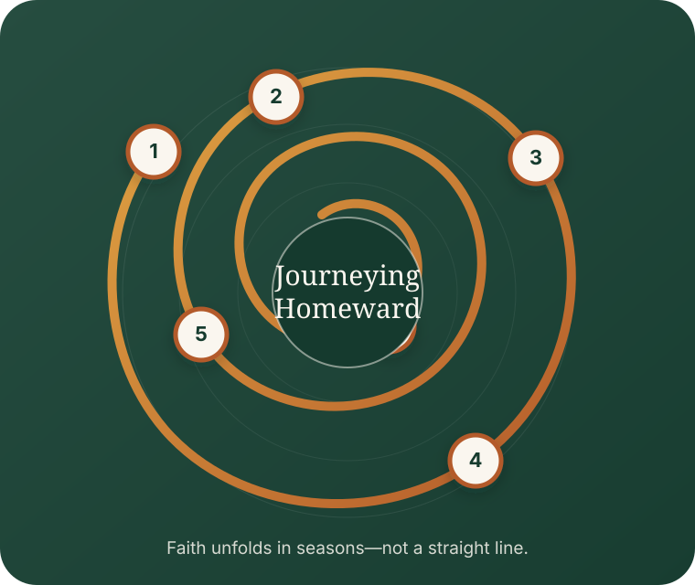

Light of Christ
A guided meditation in which we receive the loving light of Christ, rest in that presence, and allow the light to radiate toward those we love, the wider world, and all creation.
Homeward is a spiritual community for people longing for deeper faith, authentic friendship, and time-tested practices—like Christian meditation, contemplative prayer, and silent presence—that help us experience God more deeply and carry that life into the world through love.
Rooted in the life and way of Jesus, Homeward is open to all who genuinely seek God in love. We welcome faith, questions, hope, doubt, and uncertainty.
The invitation
Homeward began with questions many people carry quietly—and the hope that faith can still become deeper, more honest, and more alive.
You still feel drawn to God—or to the life and way of Jesus—but carry questions or doubts you have never been able to resolve?
You long for a deeper experience of God—not just more religious information?
You want spiritual practices that help you become calmer, more present, and more loving?
You are looking for a community that welcomes questions without demanding easy answers?
You want meaningful friendships where you can speak honestly about faith and life?
You believe faith should change how we live, relate, and care for the world?
“You do not need the right answers. You need a place to be honest, become present, and grow with people walking the same road.”
Homeward Circles
Homeward Circles are eight-week guided experiences for 6–8 people who want deeper faith, real friendship, and room for honest questions. Each gathering combines coffee or a shared meal, Christian meditation, thoughtful teaching inspired by Jesus, and conversation that connects it all to everyday life. No expertise, polished answers, or prior meditation experience is required.
Coffee, food, and unhurried connection.
A brief meditation, prayer, or spiritual practice.
Scripture and thoughtful teaching inspired by Jesus.
Honest conversation without pressure for the right answer.
A simple practice or invitation for the week.
Why we are building Homeward
A short video about the longing behind Homeward, who it is for, and why community helps us remember what matters most.
What is Homeward?
A community where spiritual depth and honest friendship grow together—without requiring certainty, performance, or pretending.
Wherever you are in your understanding of God, you are welcome to begin honestly—with your faith, questions, hope, and uncertainty.
Christian meditation, contemplative prayer, and silent presence help us become more attentive to God, ourselves, and one another.
Spiritual formation becomes a lived way of being—more present, compassionate, courageous, and loving in the world.
Practices for becoming present
Homeward practices are simple ways of slowing down, paying attention, and opening our lives to God. No prior experience is needed, and there is nothing to perform or master.
A guided meditation in which we receive the loving light of Christ, rest in that presence, and allow the light to radiate toward those we love, the wider world, and all creation.
A simple prayer joined to the natural rhythm of breathing—such as, “Breathing in, I receive peace. Breathing out, I offer love.”
Silently repeating Maranatha—Come, Lord Jesus as a way of gathering the mind, releasing distraction, and welcoming the presence of God.
A time-honored method and practice for reading Scripture and listening for the words, images, or invitations that speak to your life.
A five-step process for reviewing your day with gratitude and honesty, noticing where you felt alive, distant, loved, or invited to grow.
A gentle practice of remembering the gifts, people, and moments that have sustained us—and allowing gratitude to widen our awareness of God’s goodness.

The Journey of Faith
Faith rarely develops in a straight line. We inherit beliefs, encounter questions, search, rebuild, embody, and awaken—often revisiting each season with greater honesty and depth. Doubt is not always the end of faith; it can become the doorway to a faith that is more resilient, alive, and truly your own.
The faith you were given.
Questions and doubt open the journey.
You seek with open hands.
Faith becomes deeper and your own.
Belief becomes a way of living.
Love moves outward into life.
Why Homeward began
Homeward began because many people longed for more—more presence, more meaning, and a community where love for God, a connection to the life and teachings of Jesus, and honest questions could live together.
We come together to help one another remember what matters most.
Remembering to slow down.
Remembering that God is near.
Remembering what matters most.
Remembering who we are becoming.
Remembering to choose love.
Remembering that we do not have to make the journey alone.
A gentle next step
You do not have to schedule anything yet. Share what is drawing you toward Homeward, and someone from the community will follow up personally.
We received your information and will follow up personally.
A glimpse of what is ahead
Homeward begins simply—with people, practices, and honest conversation. The longer vision is a place where community can deepen throughout the week.
A walkable home for gathering, coffee, quiet, formation, children, friendship, and shared life.
Coffee, shared tables, conversation, coworking, and everyday relationships.
A serene room for silence, Christian meditation, contemplative prayer, and returning to God.
Common questions
Choose your next step
Reflect privately, experience a practice, explore a Circle, tell us you are interested, or have a short conversation about Homeward.